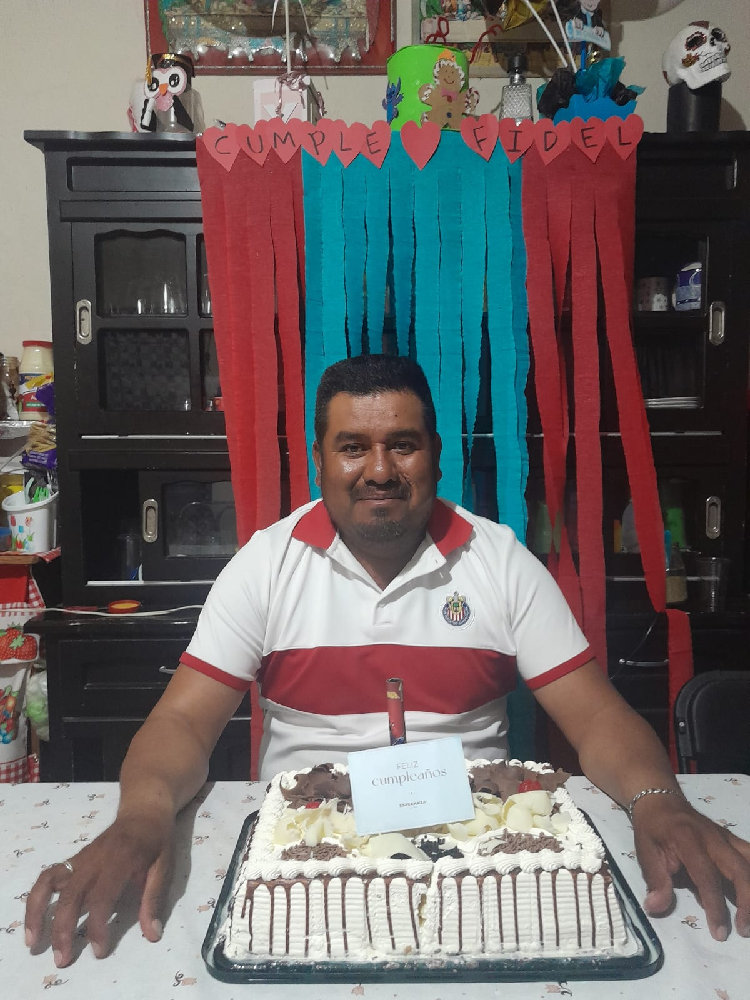
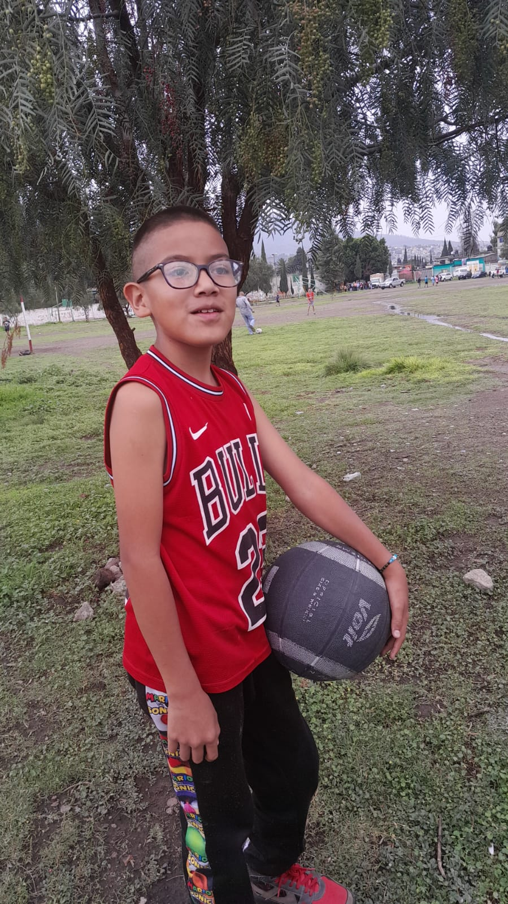

GUADALUPE ROMANO ANZURES:
Mi nombre es Guadalupe Románo Anzures cumpliré 34 años soy una mujer casada con dos hijos uno de 16 años y el otro de 11 Mi fecha de nacimiento es 4 de noviembre del 1991 me gustan los perritos mi color favorito son el azul y el rosa y el rojo

FIDEL DE JESUS DE LA CRUZ:
Yo me llamo Fidel de Jesús de la cruz cumpliré 43 años soy una persona que trata de ser buen padre, como persona me concidero responsable trabajador amoroso y felizmente casado con dos hijos y una hermosa esposa
FIDEL DE JESUS ROMANO:
Yo me llamo Fidel de Jesús Romano nací un 26 de septiembre del 2014 actualmente cumplieron 11 años pasó a sexto año soy muy juguetón alegre y comedido

| Nombre | Parentesco |
|---|---|
| Guadalupe Romano Anzures | Mamá |
| Fidel de Jesús De La Cruz | Papá |
| Fidel De Jeús Romano | Hermano Menor |